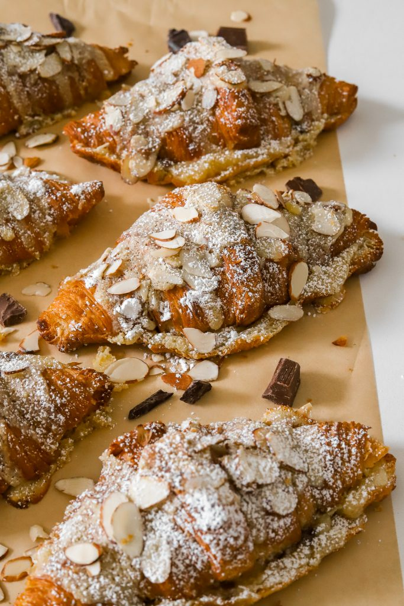

Our croissants are a true feast for the eyes as well as the palate. Each croissant is beautifully crafted with layers of delicate pastry that are baked to perfection, resulting in a golden, flaky crust that shatters with each bite. As you break into the pastry, you'll discover the soft, airy interior with its distinctive honeycomb texture. The crescent shape of our croissants is instantly recognizable, with its gently curved edges and elegant twists. Topped with a light dusting of powdered sugar or filled with delicious fillings like chocolate, almond paste, or fruit, our croissants are a work of art that's almost too beautiful to eat.
